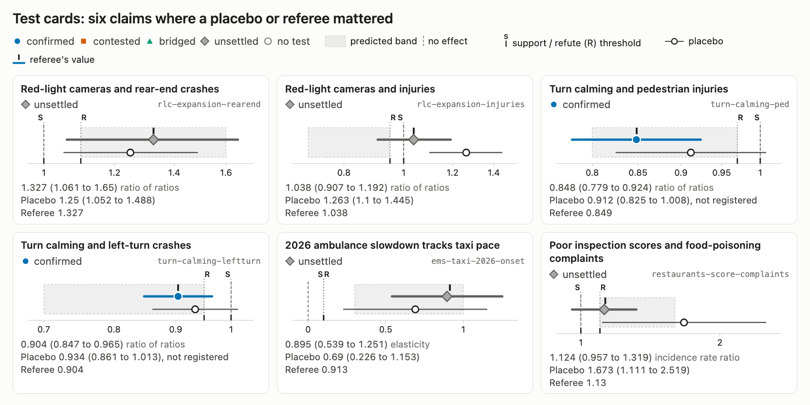

<section id="selection" class="alt">
<p class="eyebrow">A pattern across the safety tests</p>
<h2>A placebo, the same test where no effect can exist, undid two confirmations and weakened two more</h2>

<aside>The two confirmations undone under rule 11 are rlc-expansion-rearend and ems-taxi-2026-onset; in each the registered placebo met the support condition. The two weakened are the turn-calming confirmations, whose placebo was not registered. When the city picks sites after crashes, before-and-after numbers overstate the effect. Red-light cameras: the placebo year, before any cameras, gives 1.25 against 1.33. Turn calming: moving installation a year early gives 0.91 and 0.93; treated intersections declined 3.5 to 5% a year for three years before treatment. DOT's published figures (−18% for turn calming, −60% rear-end at camera sites) have no controls. Rule 12 now requires a registered placebo. The practical fix is to phase installations among eligible sites at random so each programme can be evaluated.</aside>
</section>
